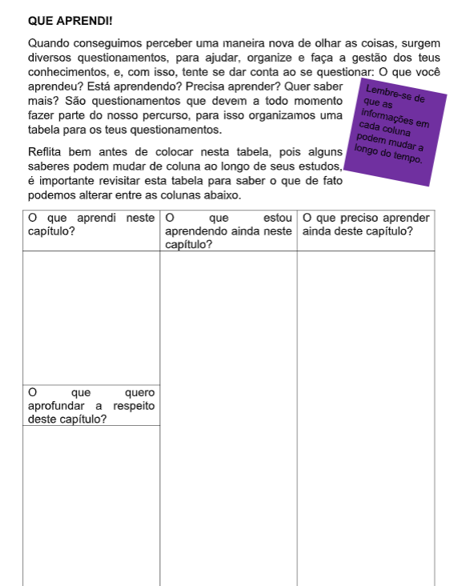
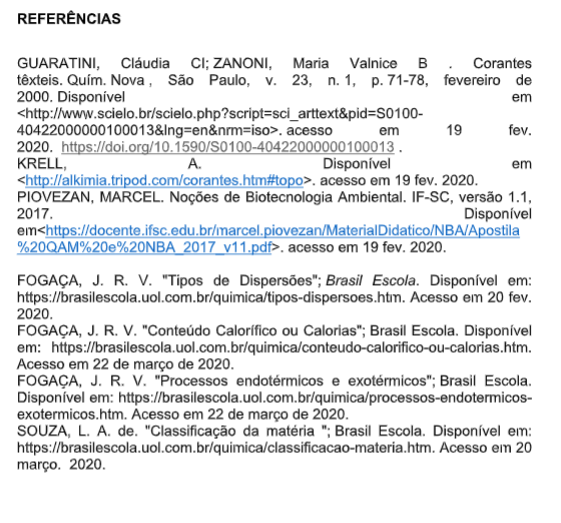

Capítulo 4
Os Polímeros na indústria têxtil
Como fabricamos fibras sintéticas? Qual a composição destas fibras? Como reconhecemos um composto inorgânico ou orgânico?
CONTEXTUALIZANDOPensar nos diferentes tipos de atuações da indústria têxtil requer conhecer diversos tipos de tecidos, bem como sua propriedades. Também é relevante pensar em como se pode otimizar a produção de cada tipo de peça. Outro ponto relevante é refletir sobre a origem da matéria prima que está envolvida, em outras palavras, se ela está  relacionada a origem animal ou não, por exemplo a lã e o algodão são de origem animal. Quando não são de origem animal normalmente são resultados de processos químicos ou vegetal, e dão origem a fibras sintéticas, como por exemplo o poliéster e o náilon entre outros.
Portanto, conhecer como podemos classificá-los bem como suas características são muito relevantes para o setor têxtil e está diretamente relacionado com a Química.
(Re)Construindo ConceitosPerceber as diferenças entre as fibras de origem sintética e naturais devemos levar em conta a composição e também suas estruturas químicas. Este capítulo tratará das propriedades importantes para conseguirmos classificar os compostos em Orgânicos e Inorgânicos. Basearemos nossas atividades em questionamentos.
Relembrando a História!Historicamente as substâncias orgânicas eram provenientes de fontes animais ou vegetais, e as substâncias inorgânicas seriam aquelas de procedência mineral. Durante muitos anos acreditava- se que compostos orgânicos e inorgânicos devido a origem, eram muito diferentes. No início do século XIX, Jöns Jakob Berzelius propôs que somente os seres vivos eram capazes de produzir os compostos orgânicos, ou seja, que tais substâncias jamais poderiam ser obtidas artificialmente (sintetizadas). Essa ideia ficou conhecida, então, como a teoria da força vital. Mas no mesmo século o químico alemão Friedrich A. Wöhler conseguiu sintetizar a ureia, um produto orgânico, a partir de substâncias inorgânicas (o cianato de amônio), comprovando que tal divisão não era verdadeira. Depois desta síntese, vários outros compostos orgânicos foram sintetizados e, então, os cientistas passaram a crer que qualquer substância química poderia ser obtida de forma artificial. Assim, a teoria da força vital caiu por terra definitivamente, e os compostos orgânicos passaram a ser definidos como os compostos do elemento carbono. No final do século XVIII, os químicos começaram a se dedicar ao estudo das substâncias presentes nos organismos vivos, com o objetivo de isolá-las e, então, poder identificá-las. Dentro de pouco tempo, eles já notaram que as substâncias obtidas a partir de organismos vivos apresentavam características diferentes daquelas obtidas a partir dos minerais, como os compostos orgânicos.
1ª Pergunta: De uma modo geral como diferenciamos um composto orgânico de um inorgânico?Para responder a este questionamento, levaremos em conta o fato de que o principal fator básico é a presença do elemento químico carbono e também pela possibilidade dele se organizar em sequências, que chamaremos de cadeias, elas podem se apresentar em cadeia longas ou curtas.
2ª Pergunta: Como pensar em compostos orgânicos?A química orgânica é um ramo da Química que está presente até em nosso organismo na forma de proteínas, lipídios e carboidratos. Os compostos orgânicos além de estarem presente em todos os seres vivos (em nosso organismo). Existem centenas destes compostos orgânicos nos alimentos que ingerimos, nas roupas que vestimos, no petróleo que utilizamos... Este ramo da Química é tão vasto que precisamos entender a sua origem, no quadro ao lado.
O carbono é tetravalente: Como o carbono apresenta 4 elétrons na última camada eletrônica, quando se liga a outro átomo compartilha esses 4 elétrons formando, portanto, 4 ligações covalentes.



 SAIBA MAIS!
SAIBA MAIS!
As fibras têxteis como a maioria das substâncias são compostas por macromoléculas. As moléculas que compõem as fibras têxteis são chamadas de polímeros (do latim poly = muitos e mer = unidades). A unidade de um polímero é o monômero (também do latim mono = um). A nível molecular o polímero é filiforme, extremamente longo e composto por uma sequência de monômeros. Outro aspecto interessante é o fato de os polímeros serem quimicamente estáveis enquanto os monômeros são quimicamente reativos. Isto explica a reação que une os monômeros para formar o polímero. Para uma matéria plástica poder ser transformada em filamentos na indústria têxtil, é fundamental que a sua estrutura química tenha a seguinte constituição: 1. Ser constituída por polímeros lineares, sem ligações laterais entre si. 2. Ter um comprimento molecular adequado. Além destas características fundamentais, e para efeitos práticos de aplicação, é conveniente que as matérias plásticas destinadas ao fabrico de fibras obedeçam igualmente às seguintes condições: 3. Poderem ser facilmente transformadas numa massa viscosa. 4. Terem um ponto de fusão ou amolecimento suficientemente elevado. 5. Serem resistentes aos agentes químicos comuns, nomeadamente ao oxigénio do ar e à luz solar. 6. Serem incolores, inodoros, não tóxicos nem alergênicos. 7. Serem de possível tingimento pelos meios ao dispor da indústria têxtil. 8. Poderem ser produzidas a partir de matérias-primas de preço acessível. Quanto a Classificação das Fibras Têxteis o esquema ao lado representa as possibilidades associadas a matéria prima de cada fibra.